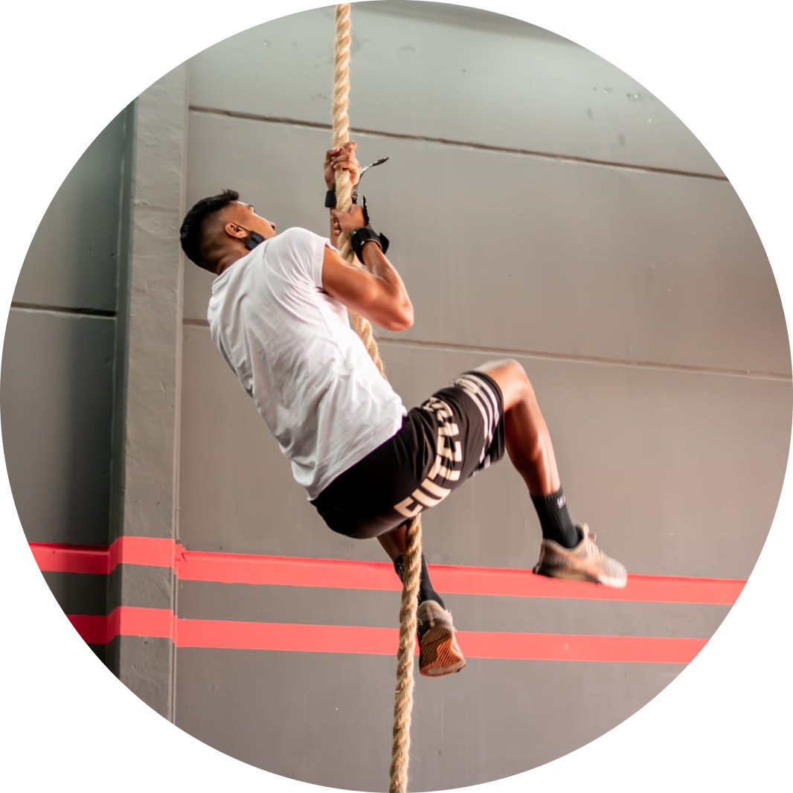
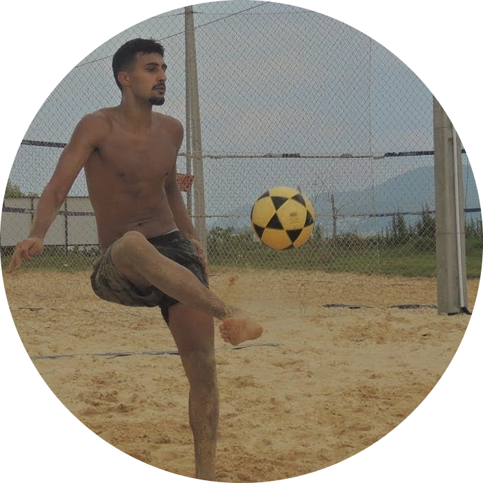

Éderson Dias
Desenvolvedor de Software

Me chamo Éderson, tenho 22 anos, atualmente moro em Florianópolis. Nascido e criado em Porto Alegre no Rio Grande do Sul, me mudei para Florianópolis pela qualidade de vida que a cidade oferece. Moro aqui há cerca de 2 anos, onde atualmente trabalho no laboratório Biolab, um lugar que me ofereceu boas oportunidades, sou muito grato, mas estou em busca de uma oportunidade na área em que estudo, como desenvolvedor.
Comecei a me identificar com a programação a pouco mais de um ano quando vi alguns anúncios sobre a área nas redes sociais de um curso, realizei o curso e iniciei a faculdade de Análise e Desenvolvimento de Sistemas, hoje estou no terceiro semestre da faculdade.
Eu gosto de estar sempre em movimento, praticando algum esporte e cuidando da saúde, as principais atividades que pratico é Crossfit e Futevolêi .
 